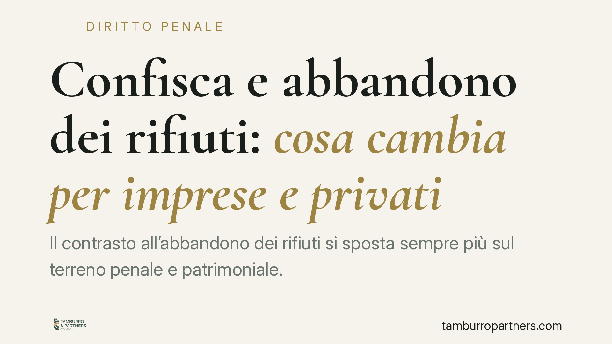

Confisca e abbandono dei rifiuti: cosa cambia per imprese e privati
Il contrasto all'abbandono dei rifiuti si sposta sempre più sul terreno penale e patrimoniale. Accanto alle sanzioni tradizionali, cresce il ricorso alla confisca degli strumenti del reato e dei profitti illeciti. Per imprese e, in misura crescente, per i privati, cambia il quadro del rischio: capire la linea di confine tra illecito amministrativo e reato diventa decisivo.

Il contesto
La gestione dei rifiuti è un settore in cui il legislatore alterna due leve: la sanzione amministrativa e quella penale. La direzione recente è chiara: le condotte di abbandono e di gestione non autorizzata vengono presidiate con strumenti sempre più incisivi, compresa la confisca.
La confisca ha una doppia funzione. Colpisce, da un lato, gli strumenti del reato (ad esempio il mezzo utilizzato per il trasporto illecito); dall'altro, il profitto che il reato ha generato. Nel settore ambientale il profitto coincide spesso con il cosiddetto risparmio di spesa: ciò che l'autore ha evitato di pagare smaltendo in modo illecito anziché corretto. È una grandezza che può raggiungere importi rilevanti e che resta aggredibile anche dopo la condanna.
Inquadramento normativo
Gli illeciti di abbandono e di gestione non autorizzata di rifiuti restano disciplinati dal d.lgs. 152/2006 (Codice dell'ambiente), in particolare agli artt. 255 e 256.
L'art. 256 punisce come reato (contravvenzione) la raccolta, il trasporto, lo smaltimento e il recupero di rifiuti in assenza di autorizzazione: è l'ipotesi che riguarda tipicamente le attività d'impresa. Lo stesso articolo prevede la confisca dell'area e dei mezzi in presenza dei presupposti di legge.
L'art. 255 disciplina l'abbandono e il deposito incontrollato. La sua portata va letta con prudenza: nella formulazione vigente, e salvo le modifiche più recenti, talune condotte in precedenza relegate all'illecito amministrativo sono state ricondotte sul piano penale. L'affermazione tradizionale per cui "il privato non commette mai reato" non può più considerarsi valida in assoluto e va verificata caso per caso.
Un piano diverso, da non sovrapporre, è quello dell'art. 259 d.lgs. 152/2006, che riguarda la spedizione illecita di rifiuti in dimensione transfrontaliera (in connessione con l'art. 194 del Codice e il Reg. UE 1013/2006). È in quel contesto specifico che opera la confisca obbligatoria del mezzo di trasporto: non si tratta, quindi, di una regola generale applicabile all'abbandono "interno".
Va infine tenuto distinto il Titolo VI-bis del codice penale (ecoreati introdotti dalla L. 68/2015), che colpisce fattispecie diverse e più gravi, come l'inquinamento ambientale (art. 452-bis c.p.) e il disastro ambientale (art. 452-quater c.p.). Per questi delitti l'art. 452-undecies c.p. prevede la confisca, anche per equivalente. L'abbandono di rifiuti, come tale, non rientra automaticamente in queste ipotesi: la confisca da ecoreato non colpisce l'abbandono in quanto tale.
Implicazioni pratiche
Per l'impresa il rischio non è più solo la sanzione pecuniaria. Il sequestro preventivo può incidere su beni strumentali, aree e disponibilità finanziarie già nelle prime fasi del procedimento, con effetti operativi immediati sulla continuità aziendale.
Si aggiunge il profilo della responsabilità dell'ente ex d.lgs. 231/2001: diversi reati ambientali figurano tra i reati presupposto. La società, se priva di un modello organizzativo adeguato ed efficacemente attuato, può rispondere in proprio, con sanzioni pecuniarie e interdittive e con la confisca del profitto.
Per il privato, come anticipato, la soglia tra illecito amministrativo e reato si è fatta più mobile. Condotte percepite come minori possono oggi assumere rilievo penale.
Cosa fare in concreto
- Mappare la filiera dei rifiuti: verificare autorizzazioni, formulari e tracciabilità di ogni passaggio, dal produttore al destinatario finale.
- Adottare o aggiornare il modello 231: inserire presidi specifici sui reati ambientali presupposto e nominare un organismo di vigilanza operativo.
- Formare il personale: le violazioni nascono spesso da errori esecutivi; la formazione documentata riduce il rischio e rafforza la posizione difensiva.
- Verificare la titolarità dei beni: chiarire chi è proprietario di mezzi e aree, perché la confisca può coinvolgere beni di terzi.
- Attivare tempestivamente l'assistenza tecnica: in caso di sequestro preventivo, è possibile proporre richiesta di riesame ex art. 322 c.p.p. entro dieci giorni dall'esecuzione.
Sul piano difensivo restano centrali tre profili: la proporzionalità della misura rispetto al fatto contestato, l'accertamento dell'effettiva titolarità dei beni e la posizione del terzo estraneo in buona fede, che può opporsi alla confisca dimostrando la propria estraneità al reato.
Disclaimer
Contributo informativo a cura di Tamburro & Partners - Avv. Giuseppe Tamburro. Non costituisce parere legale.
Ogni condominio ha una storia a sé.
Se gestisci un'amministrazione e vuoi un confronto su una specifica questione condominiale, scrivi allo studio. Ti rispondiamo entro un giorno lavorativo.